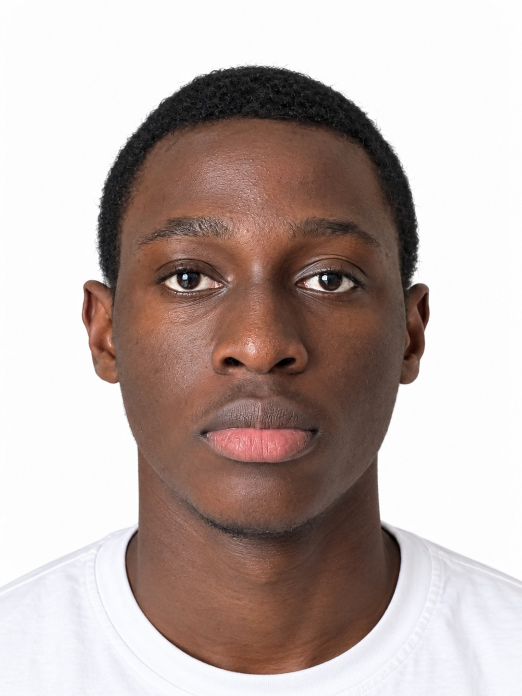

Beyobeon Trinité Alin AMON
Étudiant en BTS SIO option SISR. J’installe, je sécurise et j’administre des systèmes et des réseaux.

- Formation
- BTS SIO SISR
- Établissement
- IEF2I, Vincennes
- Année
- 1re année (2025–2026)
- Alternance
- Green Remarket, 2026–2027
Mon entreprise d'alternance
Ce que fait l'entreprise
Mes missions
L'impact de Green Remarket dans l'informatique
Parcours
Mon parcours de formation et mes expériences.
Compétences
Les outils et les technologies que j’utilise en formation, en stage et sur mon homelab.
Certifications
Mes certifications obtenues et celles que je prépare.
Projets
Mes réalisations professionnelles et personnelles, classées par domaine.
Veille technologique
Thème suivi : Les prémices du Wi-Fi 8 (IEEE 802.11bn)
Me contacter
Une offre d’alternance, une question sur un projet ? Écris-moi.